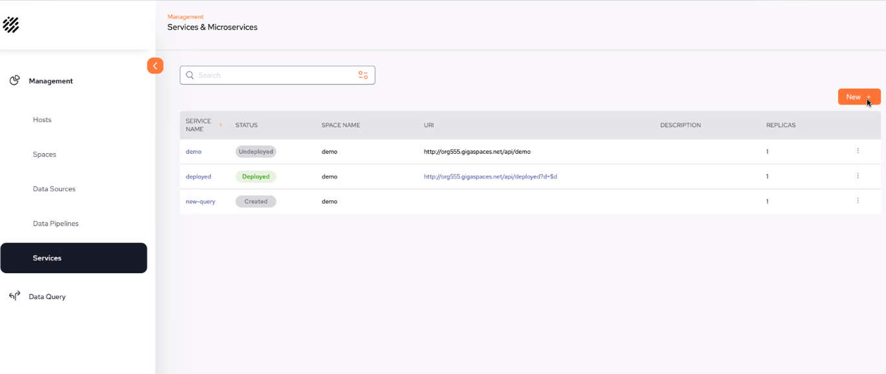

This part of the system allows you to create and execute low code data services. A query service will trigger a space query every time a request is made.
ServiceCreator service, which exposes the REST endpoints, is deployed in the environment via the Kubernetes orchestration. Any new service creation request generates a new resource of the kind QueryService by submitting a request to the ServiceCreator service. Via the SpringBoot REST application, ServiceCreator service exposes the following APIs:
Create Query Service given Spec.
Get service spec-parameters given its ID.
Get list of available services of this kind (queryService).
Delete service.
The main screen displays a list of services. For our example, there have been three services created which have different statuses:

SERVICE NAME – the name you define to the data source
STATUS – The status of the service:
Undeployed: a service that has been deployed and is not underployed for edit purposes.
Deployed: Ready for external execution
Created: a service that has not been deployed and can still be edited,
SPACE NAME – The name of the space to which the service is associated.
URL – The URL of the service.
DESCRIPTION – a free-format description of the service
REPLICAS – The amount of replicas. If it is a large service, it is recommended to define more than 1 so it can be balanced over multiple instances.
From the main Services screen, click on New +
The following configuration screen is displayed - the mandatory fields are outlined in red:
(Source drop-down list) – Choose which GigaSpaces Space object the service should be executed against.
Load Query: Displays a list of previously saved and run queries.
Service Name: Provide a unique name for the service.
Replicas: How many replicas are being used.
Description: Description of the service you are creating.
(Body of the service) – enter a SQL-99 compliant service. Initially there is an example query service displayed in gray, As soon as you lick on that area, it is replaced by a blank screen ready for you to create your service. The results of the example service are also displayed (MIN_AGE, MAX_AGE).
Retrieve first – limit the query response to the desired number of rows. A maximum of 10,000 rows can be retrieved.
Click Run Query to test the query. The query results will be displayed.
Click Save query to save the query which will then be accessible via the Load Query drop-down.
Click Create Service to create and deploy a service.
The ServiceCreator service, which exposes REST endpoints, is deployed in the environment. In addition, the ServiceCreator operator is deployed. A new service request generates a new resource of type QueryService by submitting a request to the ServiceCreator service. More information about Deploying Services.